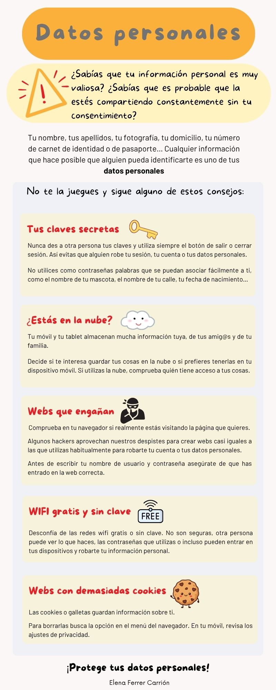

¡Ojo! Debemos ser precavidos cuando usamos Internet
Muchas veces no somos conscientes de los peligros que nos acechan cuando navegamos por Internet. Por ello debemos estar atentos y tener una serie de precauciones.
Aquí tenéis una serie de consejos que pueden ser de utilidad para evitar algunas de las amenazas que podemos encontrarnos en la red:
